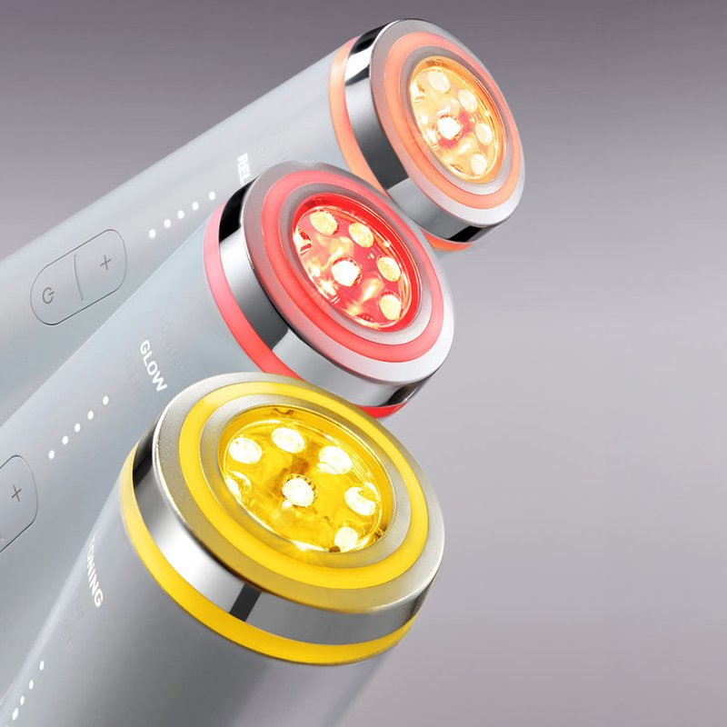
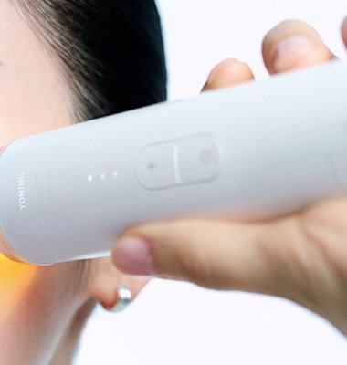

LG Pra.L Melabeam Toning Review at a Glance
This LG Pra.L Melabeam Toning review is for anyone who already owns a brightening serum and wonders whether a home LED device is worth adding. Melabeam Toning is the newest tone-care device from LG Pra.L, the beauty-device brand of LG H&H, launched in Korea in June 2026.
It is a slim, 190 g white wand with a glowing lens at the tip. You glide it over the face for about five minutes after your skincare, once a day — that is the whole routine.

The Three Modes, in Plain English
Each mode uses a different mix of light and gentle current:
| Mode | What it uses | When to use it |
|---|---|---|
| TONING | Yellow, red and infrared LEDs + electroporation (EP) | Your main tone-care step for spots and uneven-looking tone |
| GLOW | Red LED + microcurrent (MC) | Days you care more about smooth-looking texture |
| RELIEF | Red + infrared LEDs | A calm-down finish after TONING or GLOW |
Intensity goes up to five levels depending on the mode. The official guide says to use one or two modes a day at most.


How to Use It
- Cleanse and wipe with a toner pad.
- Apply a serum or ampoule so the head glides.
- Start at level 1.
- Glide for about 5 minutes per area with the tip flat on the skin.
- Wipe the head afterwards; do not rinse it.
What It Is Like to Use
The body is a long, light cylinder with just two buttons — intensity and power — so it is easy to use with one hand while watching TV. The tip sits flat on the skin like a stamp rather than rolling, which is the point: LG designed the straight beam to hit the skin head-on, mimicking how clinic devices are held.
Our honest take: this is a consistency product. It will not do anything dramatic in a week, and the brand itself says spots can look darker for a while as overall tone changes. If you enjoy a nightly ritual, it fits in easily. If you skip skincare half the week, save your money.


Key Details
| Detail | What we know |
|---|---|
| Brand | LG Pra.L (LG H&H, Korea); made in China |
| Weight / size | 190 g; 39.8 × 39.8 × 184.2 mm |
| LEDs | Yellow 590 nm, red 630 nm, IR 830 nm |
| Other tech | Electroporation (EP), microcurrent (MC) |
| Charging | 5 V USB-style input (charger ≤ 5 V / 2 A) |
| Water | Not waterproof |
| Medical device? | No — stated in the official product notice |
| U.S. Amazon | Exact Korean model not confirmed — we link a product-name search |
How It Compares
| LG Pra.L Melabeam Toning | Brightening cream (e.g. Miracle Muse) | Vitamin skincare set (e.g. d'Alba) | |
|---|---|---|---|
| What it is | Reusable LED device | Single cream | 3-step routine |
| Daily time | About 5 minutes | Seconds | A few minutes |
| Cost | High one-off | Low | Medium |
| Best for | Ritual-lovers who want an upgrade | Simple spot care | A full routine |
Pros & Cons
| Pros | Cons |
|---|---|
| Three LED wavelengths plus EP/MC | Expensive for an LED device |
| Light, one-hand design with two buttons | Results depend on daily use |
| Clear, short routine | Efficacy data comes from brand-run tests |
| Charges at 5 V — travel friendly | Exact model not confirmed on U.S. Amazon |
Who It Suits (and Who Should Skip It)
- Yes: People with uneven-looking tone or small dark spots who already have a skincare routine.
- Yes: Gadget-friendly K-beauty fans who like a nightly ritual.
- Maybe: Sensitive skin — start at level 1 and watch for redness.
- No: Melasma or diagnosed pigment conditions — see a dermatologist first.
- No: Anyone expecting laser-clinic results at home.
LG Pra.L Melabeam Toning FAQ
What does the LG Pra.L Melabeam Toning actually do?
It is a home LED device for tone care. It shines yellow (590 nm), red (630 nm) and infrared (830 nm) light through a lens at the tip, and adds electroporation or microcurrent depending on the mode. LG Pra.L positions it as a daily step to help dark spots and dull-looking skin look more even.
Does it hurt or heat up?
LED devices like this are designed for gentle daily use, and the official guide tells you to start at level 1. Stop using it if you notice redness, swelling or itching, and do not use it on broken skin or active acne.
How long until I see a difference?
LG H&H's own tests ran for two to four weeks of daily use alongside its ampoule. Results vary a lot by person, and the brand notes that spots can temporarily look darker while overall tone changes. Give it at least a month of consistent use before judging.
Do I need the matching LG ampoule?
No, but you need something on the skin so the head glides. LG designed the GLASSLIKE Triple Toning Shot Ampoule for it, and its published test results are based on using the two together.
Can I buy it on Amazon?
We could not confirm a U.S. Amazon listing for this exact Korean model, so the shop button opens an Amazon search for LG Pra.L Melabeam Toning so you can compare sellers.
LG Pra.L Melabeam Toning
The exact Korean model is not always on U.S. Amazon, so this opens a product-name search so you can compare sellers.